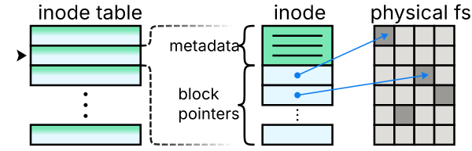

File System Concepts
A file system is a method of organizing and representing data in an operating system. This data might come from a variety of sources, the most well-known of which is a hard disk or other mass-storage device. However, files also represent other types of data, such as data stored remotely over a network and data produced dynamically by hardware drivers or by the operating system itself. In fact, all files and file system structure is dynamically generated by the operating system. While data may be physically stored on a disk, a hardware driver must provide an interface to access that raw data as a sequence of bytes, and a file system driver must interpret that raw data according to a file system format specification and implement the abstract system call interface that user-land software interacts with.
File System History
In early computers, mass storage was extremely expensive and limited, and computer programming was largely focused on working with plain text, human-readable data, which heavily influenced early file system design. While programs consisted of binary machine instructions with a word size determined by the processor architecture, text data was often stored in 6-bit encodings–enough for the 26 letters of the alphabet, 10 digits and 28 additional punctuation and control characters, which was plenty for early computing needs. Instruction data also tends to be accessed in a read-only mode with a largely linear pattern, while text data is often accessed in a read-write mode with random access characteristics. The different word sizes and access characteristics led to a natural division between “program” and “data” storage, which was reflected at all levels–storage, memory, and CPU cache. Although this division has disappeared over time, modern processor caches are still divided into instruction (iCache) and data (dCache) at the lowest levels, due to the differences in access access characteristics.
Due to the limited storage available at the time, early systems tended to implement non-hierarchical file systems with all files arranged in a single location with globally unique names. Related files would be stored on removable media, which was organized physically, rather than digitally. Over time, file system development was heavily influenced by the increased availability of storage space, the proliferation of different file formats, and the advent of the multi-user environment. Each of these led to a need for increased organizational capabilities, meta-data storage, and access control, which were first implemented in the Multics file system in the mid 1960s.
Modern file systems are heavily influenced by the pioneering work of Peter Neumann and Bob Daley, who together invented the Multics file system in 1965. The Multics file system popularized the notion of symbolic file addressing with hierarchical structure, independent of the underlying physical storage devices and file system storage format. The operating system took on the role of implementing this abstraction by dynamically and seamlessly translating the underlying physical data into a symbolic file system. The authors also introduced the concepts of access control and data integrity as core file system services.
File System Structure
The file system is organized into three layers–physical, virtual, and logical. Each layer builds upon the previous, with increasing degree of abstraction.
Physical Layer
The physical layer is responsible for handling the actual storage and retrieval of data; it consists of kernel drivers that interface with hardware and expose each file system as raw data. Common physical layer services include full-disk encryption, data mirroring, interfacing with network devices, and interpretation of partition tables.
Virtual Layer
The virtual layer is responsible for providing the file system interface for user-space programs, and for allowing multiple physical file systems to coexist; it consists of kernel drivers that interpret the contents of a raw file system, according to its particular format, and exposes an interface consisting of four types of entities: superblocks, inodes, files, and dentries. These entities exist in memory, and act as proxies for data actually stored to disk or which exists in a pseudo file system.
Most file systems designed for POSIX compatibility, such as the ext (extended file system) family of file systems, represent these entities directly, while others require significant translation by the associated kernel driver.
Superblock
Each virtual file system has one superblock, which contains implementation details such as block size and maximum filename lengths, the locations of inodes and blocks, and the location of the root directory inode for the file system.
Inode
An inode (index node) object contains information about a particular file, including its type, size, access rights, ownership, timestamps, and the location of its data as a list of block pointers. There is one inode for every file in the system, which is uniquely identified by its inode number.
Inodes 0 through 10 are reserved for special purposes; in particular, inode 2 is the root directory of the file system.

Each inode contains metadata and data block pointers for a particular file.
Dentry
A dentry (directory entry) associates an inode number with a particular file name. Each element of a path corresponds to a dentry object, and the set of dentries forms a spanning tree covering the entire file system.
File
A file object represents an open file; it contains a pointer to the corresponding inode structure, as well as the file cursor position and access rights.
Logical Layer
The logical layer is the user-facing interface of the file system, which is represented as a rooted tree denoted by hierarchical file paths. File paths are strings consisting of path components, separated by delimiters (/), where each path component represents a file or directory.
Logical File Types
In the logical file system, there are four main types of files–regular files, directories, symbolic links, and special files.
Regular Files
A regular file is a data storage unit that remains unchanged unless modified. Regular files support operations such as reading, writing, and seeking. This type of file is commonly used to store various types of data, such as text, images, or program code.
Directories
A directory is a type of file that contains other files. Directories specialize the read operation to view their contents; the write operation to create, delete, rename, and move files; and the execute operation to access files.
Symbolic Links
A symbolic link is a type of file that contains a pathname and act as logical references to other files. Symbolic links transparently forward normal file operation to the pointed-at file. Special additional operations are provided for accessing the symbolic link, itself.
One limitation of directories is that they can only contain files within the same virtual file system. This is because directory entries reference files directly, by their inode numbers, which are a virtual file system construct. Since symbolic links contain pathnames, they uniquely identify files within the unified logical file system, and do not have this limitation. A consequence of this is that soft links can be broken, if they refer to a non-existent file. On the other hand, directories hold owning references over their files.
For this reason, directory entries are also referred to as hard links, while symbolic links are called soft links. This is also reflected in file system operations–deleting a file from a directory is called unlinking it.
Special Files
Special files are similar to regular files, except that they override the normal file operations with custom driver code for each operation such as read, write, and seek. Individual devices, including physical file systems, are represented as special files, each generated by a driver for that particular device. Special files may proxy real physical hardware, but can also be entirely virtually emulated.
For example, the pseudo terminal device, /dev/pty, used by a terminal emulator is fully emulated by a driver in the kernel–it creates a master and slave device file, where the slave side emulates a terminal interface and the master side provides an interface for terminal emulators to interact with.
Another example is the random device files, /dev/random and /dev/urandom, which each provide an endless stream of random data. A kernel driver dynamically generates the contents of these files as they are read, using entropy from various hardware devices as the seed of a random number generator.
Mounting File Systems
The root directory of the logical file system is represented as /, and the root directory of each virtual file system is mapped, or mounted, at a particular path accessible within the logical file system. One file system is mounted to /, and called the system, or root, file system, and all others are mounted to paths within that hierarchy.
For example, a typical installation might be spread across each of a boot, system, and user data partition. Additionally, the kernel generates several pseudo file systems to represent things like virtual and physical hardware devices, running processes, and runtime data. These are all mounted within the logical file system, typically with the following paths,
File System |
Mount Point |
|---|---|
system |
|
boot |
|
devices |
|
user data |
|
running processes |
|
runtime data |
|
Mounting during system startup
When a system is booted, the bootloader executes the kernel, which is located in the boot partition. The kernel first loads a compressed file system image, called the initramfs, into memory and mounts it as the root file system. The initramfs contains loadable kernel drivers, called modules, which are used to initialize the rest of the system and construct virtual and physical file systems; it also contains some simple utilities, like a recovery shell, which can be used to recover from a failed boot.
Once the kernel is done initializing, it mounts the system file system as its root file system, which was specified earlier as a kernel parameter by the bootloader. Next, it reads a file, /etc/fstab, which contains a file system table specifying additional file systems to mount, and mounts those files systems. Finally, it executes the init process, typically /bin/init, which completes the boot process and hands control of the system to user-space programs.
Mounting dynamically
File systems can be mounted and unmounted in a running system with the mount and umount utilities, which are simple wrappers around the mount() and umount() system calls. All of these operations normally require system administrator privileges, although there are methods for allowing unprivileged user-space mounting and unmounting of preconfigured file systems.